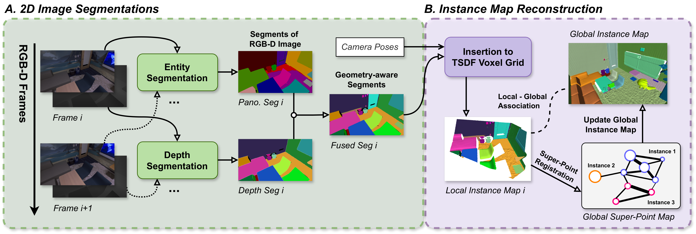
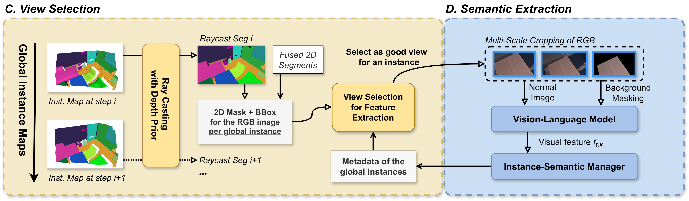
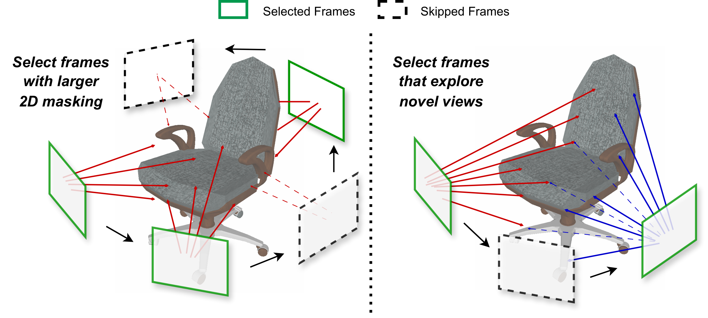

Task Definition
01 · Inputs, Outputs, and the Role of Semantics
OVI-MAP 处理带相机位姿的 RGB-D 流，维护一个三维实例地图，并为每个实例积累开放词汇语义特征。实例 ID 回答某块表面属于哪个对象，语言对齐向量则用于回答它与某个文字查询有多相似。两种信息不是同一个标签。
输入深度和位姿是重要前提。论文实验采用具有真值相机位姿的 Replica 与 ScanNet；这里的在线指地图随新观测增量更新，不表示系统已经解决了任意单目视频中的无位姿重建。
方法有意将实例形成与语义推断分开。实例由区域和几何一致性关联，语义只在选中的对象视图上提取。这与“语义反过来控制几何 memory 的读写”并不相同，后者不是本文验证过的机制。
Geometry and Association
02 · Figure 2a: Constructing the Instance Map

Zilong Deng et al. · 2026 · CC BY 4.0 · Unmodified original figure · Paper & Caption ↗
原图的上半流程从 RGB-D 开始。CropFormer 产生不依赖封闭类别标签的实体区域，深度分割提供几何边界。区域与深度片段融合后，借助内参和相机位姿被反投影到世界坐标，成为部分表面点集。
TSDF 网格记录局部表面距离、融合权重和实例标签。TSDF 可理解为表面附近有正负号且经过截断的距离场；它用多帧融合稳定几何，实例标签则为表面增加身份信息。此处并未为每个体素存储高维语言向量。
关联使用空间投票：当前片段落入哪些已有标签体素，就为相应实例累积票数。最高票超过重叠阈值时归入已有实例，否则创建新实例。随后通过体素标签支持次数稳定 ID，并处理空间邻近片段的合并。
因此，语义相似不是实例合并的直接依据。相同类别的两个对象只要几何分离，原则上可以保持不同 ID；相反，位姿或边界错误仍可能造成误合并，不能靠“开放词汇”这个名称自动消除。
Ω(j,k) = |{x ∈ Pⱼ : label(V(x)) = k}|
k* = argmaxₖ Ω(j,k)
若最高票超过关联阈值，则关联；否则新建实例。Semantic Representation
03 · Figure 2b: Extracting Object-Level Language Features

Zilong Deng et al. · 2026 · CC BY 4.0 · Unmodified original figure · Paper & Caption ↗
给定已有实例地图，系统通过深度引导的 ray casting 把实例投影回当前图像，得到可见区域。视图选择模块决定这个观测是否值得进行语义提取；没有被选中的帧仍可能参与地图相关处理，但不必重复运行对象语义编码。
选中后，方法考虑对象裁剪及去除背景的 masked crop，并进行多尺度处理。前者保留一部分上下文，后者减少背景干扰。两种视觉特征结合后更新实例的语义向量。
具体语义骨干是 SigLIP。这里的 VLM 是对齐图像与文本表示的编码模型，不是每帧都生成自然语言解释的对话模型。查询时把文字编码到同一空间，计算文字向量与各实例向量的余弦相似度。
得到的是可检索实例及其语义相似度。它可以用于开放词汇实例高亮或语义赋值，但不能仅凭一个相似度把实例位置当成已经完成关系推理或动作规划。
View Selection
04 · Figure 3: What View Coverage Actually Measures

Zilong Deng et al. · 2026 · CC BY 4.0 · Unmodified original figure · Paper & Caption ↗
图左按图像中的 mask 面积选视图，容易保留多个外观相近的大裁剪；图右希望保留能够补充不同表面区域的观测。需要注意，正文的方向定义是从对象中心指向可见表面点，而不是直接从相机中心发出的视线。
每个实例维护 180×240 的二值球面分箱图。以实例三维包围盒中心 c 为基准，将可见表面点 x 的归一化方向 (x−c)/‖x−c‖ 映射到球面 bin。新覆盖比例 η 是当前占据 bins 中此前未占据 bins 的比例，超过阈值才选择这帧提取语义。
这是一种对象表面角覆盖的离散代理量，不是精确表面积，也不是文字特征的新颖度。它可以促使保留不同可见区域，但对细长、非凸或局部遮挡对象，覆盖与语义信息量并不必然一一对应。
例如某帧占据 100 个 bins，其中 20 个此前没见过，则 η=0.2；只有阈值低于该值才触发选择。这是公式的教学算例。不能把“新增 20 个 bins”直接解读成新增了对象真实表面积的 20%。
d(x) = (x − c) / ‖x − c‖₂ η = Number of newly occupied bins / Number of currently occupied bins Select the view when η > θnovel
Update Rule
05 · Feature Aggregation and Text Queries
视图选取和特征加权是两个阶段。前者利用球面覆盖判断是否值得付出一次编码成本，后者按可见对象像素数衡量已选观测的权重。二者不能混写成一个“语义置信度分数”。
设 f_old 为累计特征，W 为累计像素权重，w 为当前可见像素数，f_crop 与 f_mask 为两种裁剪的特征。更新是旧特征与当前两特征平均的加权均值。被看到的像素多时，当前观测的影响更大，但像素多并不保证遮挡少、类别判断正确。
归一化后的实例向量可与文本向量做余弦比较。任意文本查询与量化评测也要分开：实验使用 Replica 的 51 类和 ScanNet200 标签，把开放词汇向量映射到这些预定义名称。该协议便于比较，却没有穷尽自由描述、属性和关系查询的表现。
这篇主要组合预训练分割与图文编码模块，并设计在线关联和聚合；原文没有给出一个以最终三维分割损失端到端训练全部模块的过程。零样本语义赋值指当前系统没有为目标标签集再训练分类头，不等于所用骨干从未受过数据监督。
f_new = [W f_old + w(f_crop + f_mask)/2] / (W+w) score(instance, query) = cosine(f_instance, f_text)
Experiments
06 · Evaluation Protocol and Main Results
实验硬件是 RTX 3090 与 Intel i7-12700K，TSDF 体素尺寸为 0.1 米。标准序列评测均匀采样 200 帧，使用相同输入轨迹与评测条件；在线实时设置另有帧跳过安排。读取数字时要保留这些条件。
下表取自语义实例评测 Table 3 的 Replica 标准设置。相较 OVO-SLAM，本文 mIoU、AP25 与 AP50 较高，但 mAcc 与 APall 较低。因此，“所有语义指标更好”不是这张表支持的说法。
实例地图本身的质量也影响后续语义。Table 2 的 Replica 类别无关实例评测中，本文 AP50 为 50.8，OVO-SLAM 为 23.6；mIoU 却是 36.3 对 42.7。不同指标强调不同的覆盖、边界与匹配条件，应分别解释。
带语言的语义实例 AP 与类别无关实例 AP 来自不同实验目标，即使同叫 AP50，也不能混成同一列。先看表标题与是否需要类别匹配，再讨论具体数值。
| Replica · Table 3 | mIoU ↑ | mAcc ↑ | AP25 ↑ | AP50 ↑ | APall ↑ |
|---|---|---|---|---|---|
| OVO-SLAM | 24.9 | 34.0 | 28.1 | 17.5 | 9.1 |
| OVI-MAP | 26.5 | 32.2 | 34.5 | 21.2 | 8.5 |
Ablations
07 · View Selection: Cost and Accuracy Must Be Read Together
Table 4 中 Replica 的 pixel counting 与 view coverage 都得到 26.5 mIoU；AP50 从 19.8 变为 21.2，平均查询次数 AQ 从 18.7 降到 8.6。这里的价值主要是更少语义查询下维持相近或更好的部分指标，不是单看一个精度提升。
ScanNet 上 view coverage 的 AQ 从 15.8 降为 7.6，但 AP50 从 17.0 降为 15.7，mIoU 保持 17.5。这是清楚的成本与精度权衡。使用真值实例的对照也显示覆盖率策略并不在所有指标上占优。
Table 6 的像素加权聚合将 Replica mIoU 从 26.5 提高到 26.9，AP50 从 19.8 到 22.0。它检验的是聚合规则，不应与 Table 4 的视图选择改变合并解释为同一项消融。
对个人研究更有用的比较方式，是同时画查询次数、累计成本与分割质量，而不是只报告 VLM 调用减少了多少。不同候选视图策略应在相同实例地图质量、编码器和输入序列下比较。
| Dataset / Selection | mIoU ↑ | AP50 ↑ | AQ ↓ |
|---|---|---|---|
| Replica / Pixel Counting | 26.5 | 19.8 | 18.7 |
| Replica / View Coverage | 26.5 | 21.2 | 8.6 |
| ScanNet / Pixel Counting | 17.5 | 17.0 | 15.8 |
| ScanNet / View Coverage | 17.5 | 15.7 | 7.6 |
Runtime and Scope
08 · Online Processing and the Meaning of Real Time
附录说明系统让分割、关联、选帧与语义提取并行执行，并只在关键帧运行昂贵步骤。Table 8 中 RGB segmentation 每次约 964.8 ms，而不是每个输入帧 33 ms 内完成所有处理。30 FPS 设置依赖跳帧和流水线，不能被写成完整语义更新对所有帧都有 30 Hz 输出。
这也影响质量比较：减少处理帧数既降低成本，也改变可用观测。主表单列 30 fps 行的原因就在这里；若移植到另一系统，应同时记录输入帧率、各模块更新频率以及结果延迟。
对于语义 memory 设计，本文提供了“对象身份、覆盖状态、语义向量”分开维护的具体参考。但它让几何覆盖控制语义计算，并未证明语义改善了相机位姿或底层几何。若要进一步让语义影响重建，应将这一新增反馈路径单独训练和消融。
本篇最值得保留的是一种组织方式：先用可关联的空间实体承载跨帧证据，再按观测覆盖选择语义计算时机。它的效果依赖实例分割、位姿与深度质量，且开放环境持续新增实例时，整张地图并没有在文中被证明为固定总容量。
Discussion
Reading Questions
Does semantic similarity decide instance identity?
本方法的主要关联依据是空间投票与几何一致性。语义向量在已经建立的实例上聚合，因此同类不同实例不应仅因文字相似就被合并。
Is the coverage direction a camera ray?
正文定义为从实例中心指向可见表面点的方向。它与 Ray-Aware Memory 中从相机到观测点的射线不是同一个量。
Does the paper demonstrate semantic feedback into reconstruction?
没有。它将实例重建和语义提取解耦；用语义改善重建 memory 是另一个需要受控实验验证的问题。
References
Figures reproduced from the linked paper under CC BY 4.0. Explanations and analysis are reading notes, not author statements.
Verified on October 12, 2026. Paper claims refer to the linked versions; code references reflect the official repositories on this date.